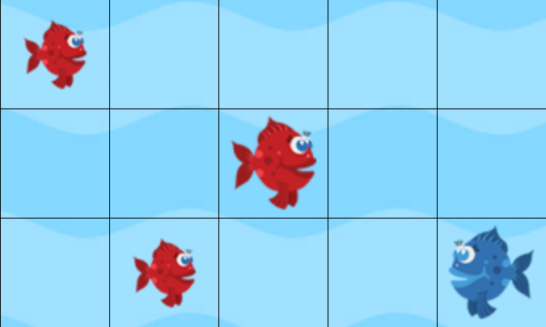
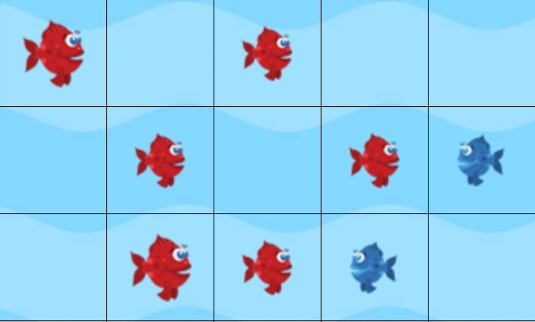

Place 3 pieces.
Click on one of them to expand. 
The piece expands in 4 directions. 
Now let us repeat.
One more time and the piece will expand.
Now it overflows taking the opponents pieces. That's it.